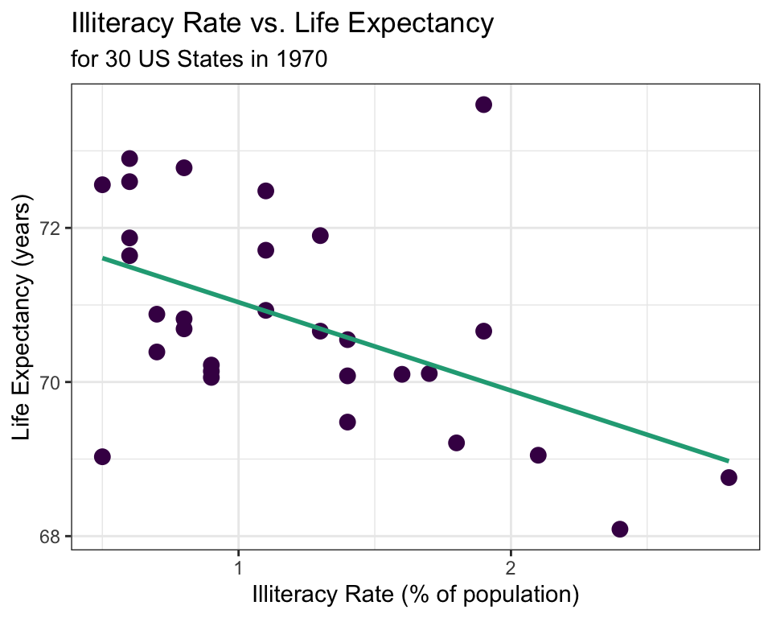

If you’d like to export this presentation to a PDF, do the following
Toggle into Print View using the E key.
Open the in-browser print dialog (CTRL/CMD+P)
Change the Destination to Save as PDF.
Change the Layout to Landscape.
Change the Margins to None.
Enable the Background graphics option.
Click Save.
This feature has been confirmed to work in Google Chrome and Firefox.
Bivariate Relationships
✍️ Describe the relationship between illiteracy rate and life expectancy shown in the scatterplot above.
üó£ Describe the relationship between high school graduation rate and income using the scatterplot above.
00:30
Explanatory and Response Variables
When discussing bivariate relationships, it is common to treat one variable as the explanatory and one as the response.
Explanatory Variable
Response Variable
May help to explain or predict changes in the response variable.
Quantitative
Sometimes referred to as
\(x\) variable
independent variable
predictor variable
The variable to be estimated or predicted
Quantitative
Sometimes referred to as
\(y\) variable
dependent variable
Example üìñ
If we are interested in trying to model (e.g., explain) life expectancy using illiteracy rate in 1970, which variable should we treat as the explanatory? Which variable should we treat as the response?

Measuring Linear Strength
The correlation coefficient, \(R\), measures the strength of a linear association between two quantitative variables.
The correlation between two quantitative variables will always be a value between -1 and 1.
For each of the scatterplots below, estimate the correlation coefficient for the relationship between the explanatory and response variables.
Simple Linear Regression
Simple linear regression is the statistical method for fitting a line to describe the relationship between two quantitative variables.
We want to find a line of the form \(\hat{y} = b_0 + b_1 x\)
What characteristics would the “line of best fit” have?
Simple Linear Regression
Open the link: https://beav.es/cTp (also found in the Quick Links module on Canvas called “SLR Demo”)
Try to find the line that best fits the data by adjusting the sliders below \(b_0\) and \(b_1\).
üó£ Compare your values of \(b_0\) and \(b_1\) to somewhere nearby. Discuss how you chose the values of \(b_0\) and \(b_1\).
02:00
Residuals
The residual of an observation is the difference in the observed response, \(y_i\), and the predicted response based on the model fit, \(\hat{y}_i\).
\(e_i = y_i - \hat{y}_i\)
Least Squares Regression Line
The least squares regression line (LSRL) is calculated by finding the line that minimizes the sum of the squared residuals.
When fitting the LSRL, we generally require:
Linearity - the data should indicate a linear trend
Nearly normal residuals - the residuals should be approximately normally distributed
Constant variability - the variability of the points around the line should be roughly constant
Independent observations
The above conditions are generally checked using a residual plot (coming up…)
If the above conditions are met, we can fit the LSRL using the following estimates \(b_1 = \frac{s_y}{s_x}R\) and \(b_0 = \overline{y} - b_1\overline{x}\)
In practice, we compute these estimates using R. Coming up…
Interpreting the LSRL
\[ \hat{y} = b_0 + b_1 x\]
Interpreting the intercept estimate, \(b_0\): the expected value of the response variable when the explanatory variable is equal to 0.
Interpreting the slope estimate, \(b_1\): For a one unit increase in the explanatory variable, we expect the response to change by \(b_1\).
\[\hat{y} = 72.181 - 1.146x\] where \(\hat{y}\) is the predicted average life expectancy and \(x\) represents illiteracy rate.
Example üìñ
The LSRL that best fits the illiteracy rate vs. life expectancy data is
\[\hat{y} = 72.181 - 1.146x\] where \(\hat{y}\) is the predicted average life expectancy and \(x\) represents illiteracy rate.
Interpret the slope estimate from this LSRL:
For every one percent increase in illiteracy rate, average life expectancy is expected to decrease by 1.146 years.
00:45
Basic Predictions from the LSRL
The LSRL can be used to predict the outcome of the response variable for given values of the explanatory variable.
Example üìñ
\[\hat{y} = 72.181 - 1.146x\] where \(\hat{y}\) is the predicted average life expectancy and \(x\) represents illiteracy rate.
Predict the average life expectancy in 1970 for a state with an illiteracy rate of 1.4%.
\[\hat{y} = 72.181 - 1.146(1.4) = 70.577\]
Residuals (again)
Recall that the residual is difference in the observed response variable and the predicted response based on the model fit: \[e_i = y_i - \hat{y}_i\]
Example üìñ
\[\hat{y} = 72.181 - 1.146x\] where \(\hat{y}\) is the predicted average life expectancy and \(x\) represents illiteracy rate.
Compute the residual for a state that had an illiteracy rate of 1.4% and an average life expectancy of 70.55.
\[e = 70.55 - 70.577 = -0.027\]
Residual Plot
Recall that to fit the LSRL, we need four conditions to hold (see Least Squares Regression Line slide).
Some of these conditions can be easily checked using a residual plot.
Ideally, when fitting the LSRL, we see no obvious patterns in the residual plot.
If a pattern is visible, it might be an indication that one or more of the LSRL conditions are violated.
Violations of LSRL Conditions
Linearity violated
Nearly normal residuals violated
Constant variability violated
Independence violated
Example üìñ
\[\hat{y} = 72.181 - 1.146x\] where \(\hat{y}\) is the predicted average life expectancy and \(x\) represents illiteracy rate.
Are any of the LSRL conditions (linearity, normal residuals, constant variability, or independence) violated for the model that was fit for illiteracy vs. life expectancy?
R Code for This Week’s Examples
# Open the tidyverse librarylibrary(tidyverse)# Import the dataset, first need to download the data from Canvasstate_30 <-read_csv(file.choose())# Create a scatterplot of the Illiteracy and LifeExp variablesggplot(data = state_30, aes(x = Illiteracy, y = LifeExp)) +geom_point(color ="purple", size =3) +labs(y ="Life Expectancy (years)", x ="Illiteracy Rate (% of population)", title ="Illiteracy Rate vs. Life Expectancy",subtitle ="for 30 US States in 1970") +theme(axis.title =element_text(size =18)) +theme_bw() +stat_smooth(method ="lm",formula = y ~ x, geom ="smooth", se =FALSE, color ="darkgreen")## Calculate the correlation between illiteracy rate and life expstate_30 %>%summarise(cor =cor(Illiteracy, LifeExp))# Estimate intercept and slope for LSRLlm(LifeExp ~ Illiteracy, data = state_30)